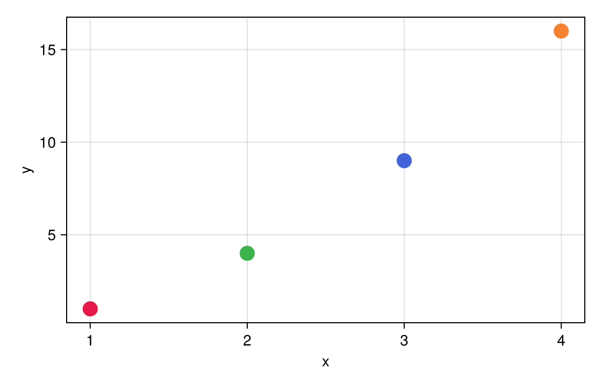
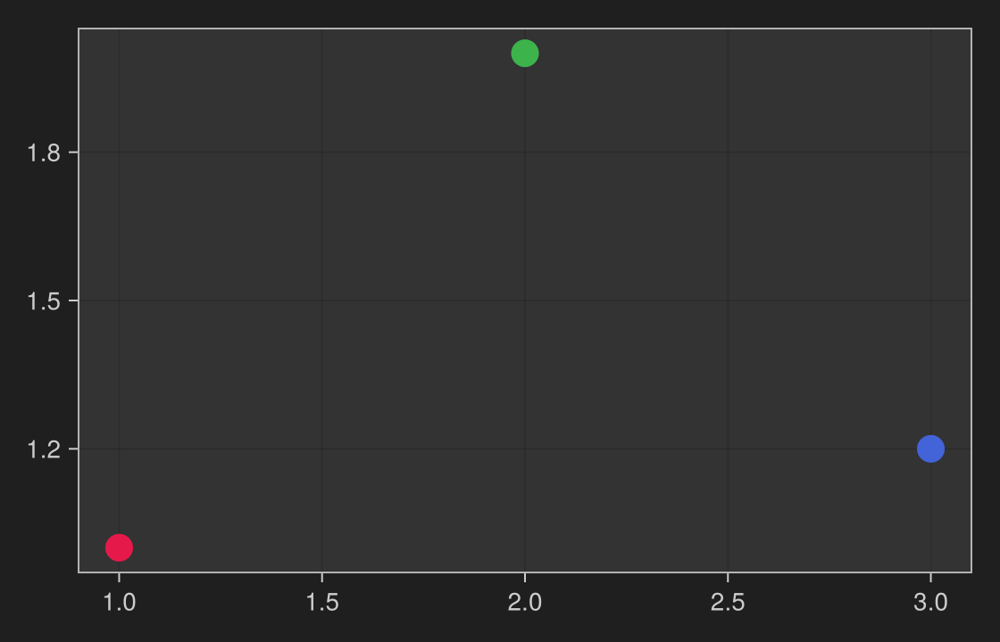

Tooltips
Hold the pointer over a mark and a card appears above it with that mark's data. The card is built in the browser from the mark's payload, so it appears instantly and never re-runs Julia. You choose one of three things for each interactable: the default table, a template of your own, or no card at all.
In this notebook each city's card is a template that prints the name in bold and the population with thousands separators, and the card's border takes the marker's colour:
Notebook as text
Hold the pointer over a city to read its name and population. Click one and the last cell names it.
Scatter the cities the way you already would. The tooltip template reads city and pop off each point, and the border uses the same palette as the markers.
begin
cities = [
(city = "Tokyo", pop = 37_400_000, x = 1.0, y = 1.0),
(city = "Delhi", pop = 32_900_000, x = 2.0, y = 4.0),
(city = "Shanghai", pop = 28_500_000, x = 3.0, y = 9.0),
(city = "São Paulo", pop = 22_400_000, x = 4.0, y = 16.0),
]
palette = ["#e6194b", "#3cb44b", "#4363d8", "#f58231"]
fig = Figure(size = (560, 360))
ax = Axis(fig[1, 1]; xlabel = "x", ylabel = "y")
scatter!(ax, [c.x for c in cities], [c.y for c in cities]; color = palette, markersize = 20)
tips = PointInteractable(
ax, [(c.x, c.y) for c in cities];
payloads = cities,
colors = (; palette, index = collect(0:(length(cities) - 1))),
tooltip = masque"<b>$(city)</b><br>pop $(pop:,)",
)
nothing
end@bind pick stores a click in pick. Hover updates the card and does not change pick.
@bind pick masque(fig, tips)
Before a click, pick is nothing. This cell reads pick, so it re-runs on the click.
if pick === nothing
"hover a city, or click one"
else
"$(pick.city) selected"
endhover a city, or click oneThe default card
Leave tooltip out and the card is a small table of the payload's fields. For a scatter whose payloads you did not set, that is the point's index, x, and y; with your own payloads, it is your fields. The table is a good first draft and often all you need.
Two interactables are exceptions. A legend entry shows no card by default, because its label is already drawn next to the swatch; pass a template if you want one (see Legend). A SliceInteractable shows the series values at the cursor rather than a mark's payload.
Write a template
A template is a masque"..." string. Each $(field) is replaced by that field of the payload under the pointer:
PointInteractable(ax, s;
payloads = cities,
tooltip = masque"<b>$(city)</b><br>pop $(pop:,)",
)| In the template | Becomes |
|---|---|
$(field) | the payload's field, HTML-escaped |
$(field:spec) | the same, formatted with a d3-format spec first — :, adds thousands separators, :.2f two decimals, :.1% a percentage |
\$ | a literal dollar sign |
| anything else | copied into the card as HTML, so <b> and <br> work |
$(field) names a payload field, not a Julia variable, and it cannot be an expression. The template has to work in the browser without Julia — in a static export, for instance — so anything you want to compute goes into the payload first:
rows = [(; city = c.city, density = round(c.pop / c.area; digits = 1)) for c in raw]Because the template's own text is inserted as HTML, keep it to markup you wrote. Payload values are always escaped, so data cannot inject markup, but a template like <a href="$(url)"> still trusts whatever URL the data holds.
tooltip = false turns the card off while keeping the hover highlight and the click.
Mistakes Masque catches
A template that cannot be parsed — an expression such as $(pop + 1), an unclosed $(, or a format spec d3 does not understand — is a TemplateValidationError as soon as the cell containing masque"..." runs.
A field the payload does not have is caught when masque builds the widget, with a "did you mean" suggestion for a close misspelling. That check reads the field names of named-tuple payloads. With a DataFrame or Dict payloads it is skipped, and a misspelled field simply leaves a blank in the card — worth a quick hover after you write the template.
Where the card appears
The card sits above the mark under the pointer, with a small caret pointing at it, and flips below the mark if it would run off the top of the figure or shifts sideways at the edges. On a line it follows the nearest point of the line. Axis readouts, thresholds, boxes, the view, and a slice have no single mark, so their card follows the pointer instead. When a mark has keyboard focus, the card anchors to it the same way.
Match a dark figure
The card's light or dark theme comes from the figure's own background, not from the browser or operating-system setting, so a dark figure gets a dark card even on a light page:
fig = Figure(size = (560, 360); backgroundcolor = :gray12)Notebook as text
Hold the pointer over a point. The card is dark because the figure is dark. Click a point and the last cell names it.
Draw the scatter on a dark figure, and pass that scatter to PointInteractable. The tooltip picks up the figure background and the marker color.
begin
points = [
(label = "alpha", x = 1.0, y = 1.0),
(label = "beta", x = 2.0, y = 2.0),
(label = "gamma", x = 3.0, y = 1.2),
]
fig = Figure(size = (560, 360); backgroundcolor = :gray12)
ax = Axis(
fig[1, 1];
backgroundcolor = :gray20,
xtickcolor = :gray80,
ytickcolor = :gray80,
xticklabelcolor = :gray80,
yticklabelcolor = :gray80,
xlabelcolor = :gray80,
ylabelcolor = :gray80,
bottomspinecolor = :gray70,
leftspinecolor = :gray70,
rightspinecolor = :gray70,
topspinecolor = :gray70,
)
s = scatter!(
ax, [p.x for p in points], [p.y for p in points];
color = ["#e6194b", "#3cb44b", "#4363d8"],
markersize = 22,
)
pts = PointInteractable(ax, s; payloads = points)
nothing
end@bind pick stores a click in pick. Hover updates the card and does not change pick.
@bind pick masque(fig, pts)
Before a click, pick is nothing. pick.label is the point's name. This cell reads pick, so it re-runs on the click.
if pick === nothing
"hover a point, or click one"
else
"$(pick.label) selected"
endhover a point, or click oneBrowsers too old for CSS relative colours fall back to the system light/dark setting.
Accent color
When Masque knows the colour of the mark under the pointer, the card gets a 3px border in that colour; the text stays neutral. The colour comes from scatter!'s color= when you pass the Scatter itself to PointInteractable (as the dark example does), from the colors= keyword (as the city example does), or from a legend entry's swatch. Without a known colour the border is a plain hairline.
To change the card's background, text colour, font, or corner radius for a whole widget, pass the tooltip_* keywords to masque, or set the --masque-tip-* CSS properties on the page; see Tooltip chrome.